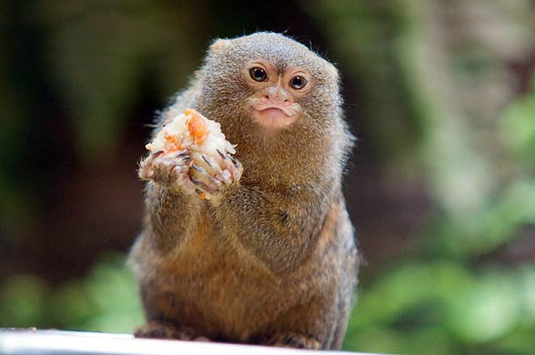

Карликовая игрунка
 Карликовая игрунка (меньше банана) на банане.
Карликовая игрунка (меньше банана) на банане.
Научная классификация:
- Домен: Эукариоты
- Царство: Животные
- Тип: Хордовые
- Класс: Млекопитающие
- Отряд: Приматы
- Семейство: Игрунковые
- Род: Карликовые игрунки
- Вид: Карликовая игрунка

Карликовая
игрунка (очень щедро)
предлагает свой обед.
Поведение:
- Питаются:
- Древесные соки
- Насекомые
- Фрукты
- Живут в:
- Амазонке
- Южной Колумбии
- Эквадоре
- Западной Бразилии
Личное мнение:
Я считаю, что Карликовая игрунка очень крутая обезьяна по следующим причинам:
- Очень маленькая
- Очень щедрая
- Очень крутая
Могу чуть точнее выразить свои чувства к Карликовой игрунке в следующей таблице: